A Multimodal Archive Companion — searching, questioning, and evaluating a library of material textures
“When you know your archive intimately, you notice the moment the machine sees something that isn’t there.”
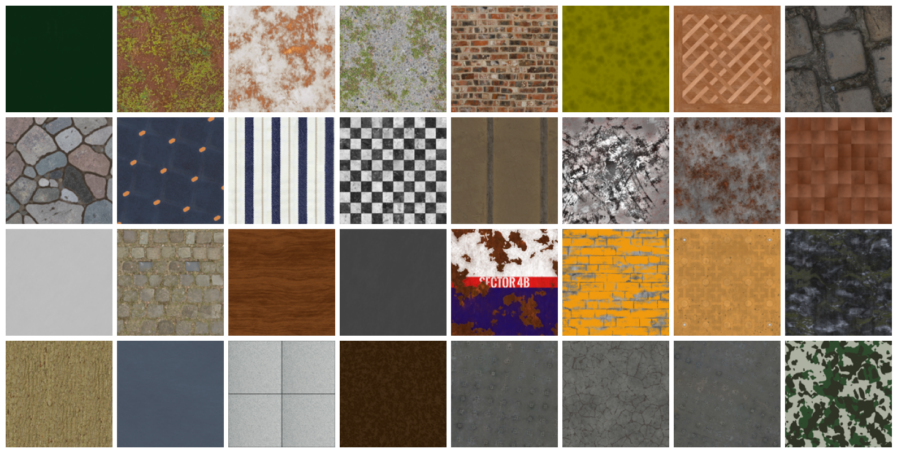
This project extends a text retrieval-augmented-generation pipeline into the visual domain over a curated archive of 300 physically-based material textures. It builds and measures three retrieval routes: a CLIP joint-embedding search (L1); a caption-mediated route where Gemma 3 4B describes every image and retrieval runs over that text (L2); and a hybrid that fuses the two, scored with precision@k against MatSynth’s own category labels (L3). The headline result is a clean, falsifiable one: with real VLM captions, the caption route is worse than plain CLIP (P@5 0.37 vs 0.54), hybrid fusion yields no improvement (optimal weight α = 1.0 = pure CLIP), and Gemma names the wrong material ~43 % of the time. The project treats that failure — and its mechanism — as the main finding.
The brief asks for “a collection you know intimately.” I work with PBR materials constantly in 3-D and shader work, so a material library is an archive I read fluently — I can tell at a glance when a result is wrong, which is exactly the machine mis-seeing the project hunts for. Materials are also revealing precisely because they are texture without objects: no faces, no scenes, no web-caption priors. A model that has truly learned “rust”, “weave”, or “veining” retrieves well; one leaning on object/scene priors stumbles.
The corpus. The base-color (albedo) map of 300 materials drawn from MatSynth, spanning all 13 categories, downscaled from 4096 px to 512 px. 300 is the assignment’s Level-3 ceiling and gives enough per-category mass for a meaningful precision@k.
category and tags labels become
objective ground truth for the L3 evaluation — something a folder of personal photos couldn’t give
without hand-labelling. The archive is “mine” by fluency, not by authorship.
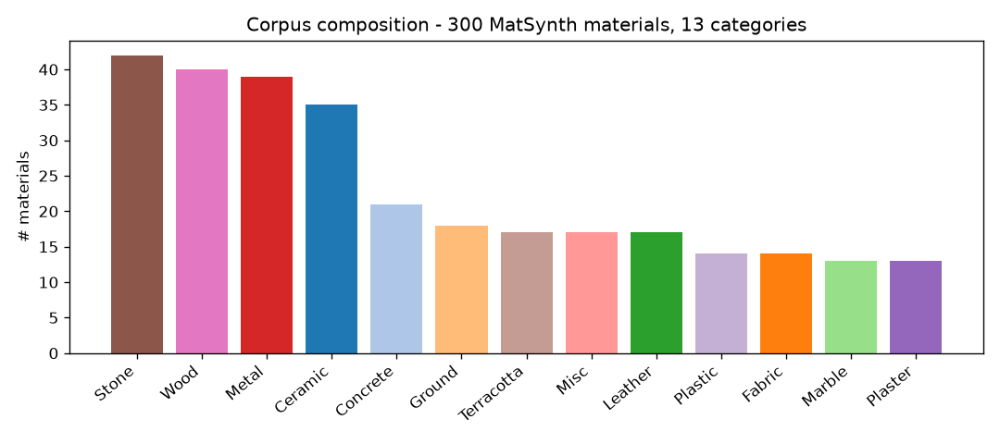
Everything expensive is computed once and cached to Google Drive: CLIP embeddings, Gemma captions, and caption embeddings. The notebook re-runs from cache without a GPU. The Gemma captioning itself ran on a Colab T4 (4-bit); all retrieval, fusion and evaluation are CPU-friendly.
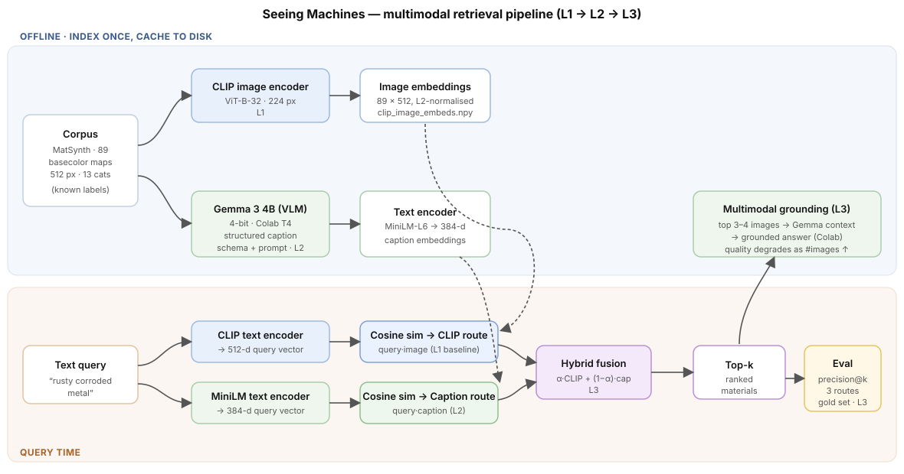
Instead of freeform captions I imposed a structured schema whose fields are the axes a designer
searches materials on: material_type, colors, surface_finish,
pattern, condition, notable_features, and a natural-language
caption (the field that gets embedded). This is a deliberate, literature-grounded choice: it
mirrors the Describable Textures Dataset’s controlled attribute vocabulary and the category-tree
annotation used by Make-it-Real. Splitting the axes out also lets the mis-seeing dossier below check
each one — did Gemma get the colour right but hallucinate the material?
Does CLIP organise this corpus by material? A PCA of the 300 image embeddings says only weakly: same-category pairs sit at mean cosine 0.683 vs 0.635 for different-category pairs — a gap of just +0.048. Stripped of objects and context, materials share low-level colour and frequency statistics, so the categories bleed together.
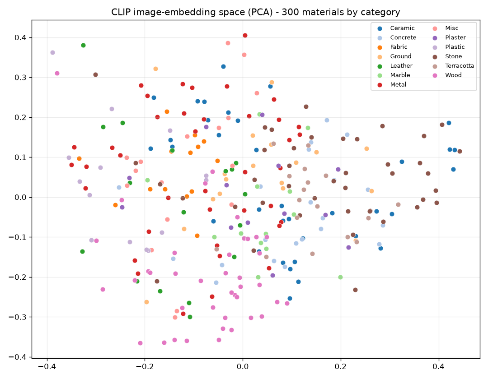
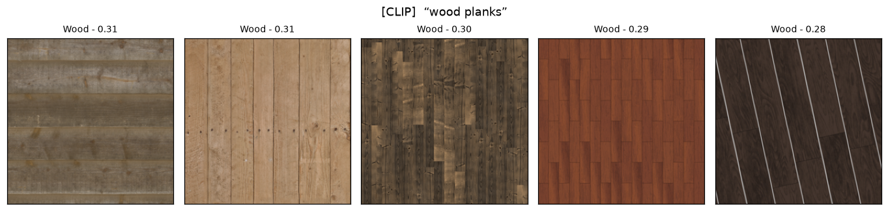
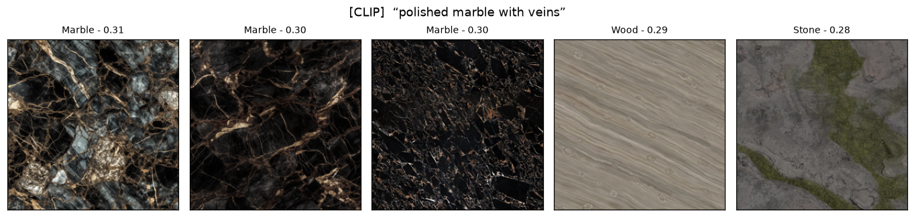
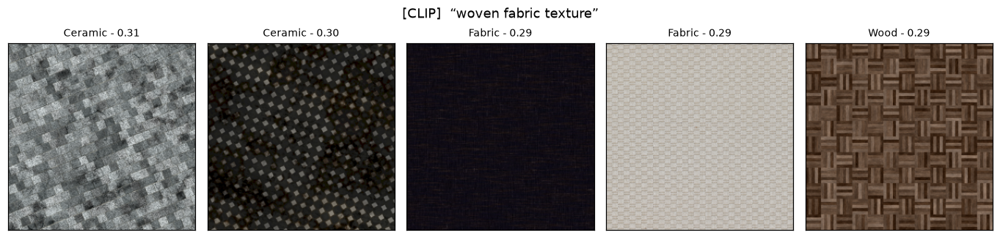
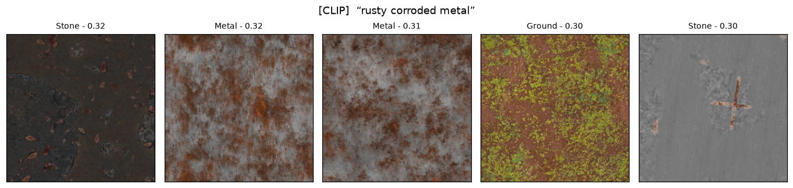
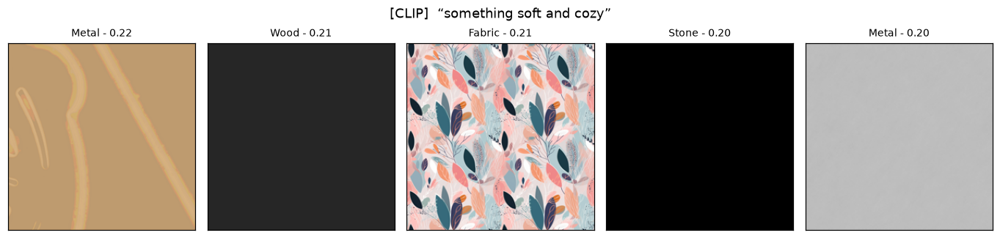
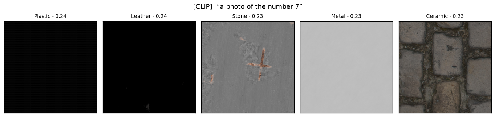
The caption route reads each image with Gemma 3 4B, writes the structured description, and retrieves over that text. The hypothesis was that it would win on reasoning queries. In practice, on raw albedo maps it mostly loses — and the side-by-side shows why.
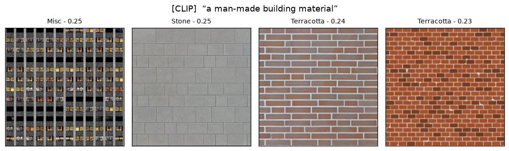
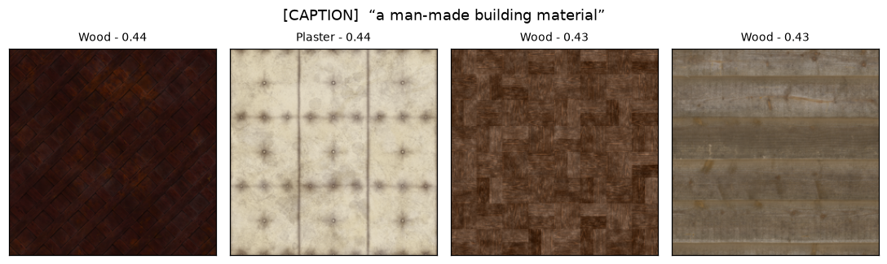
Because the schema records material_type, we can automatically audit it against MatSynth’s
ground-truth category. The result is stark: Gemma assigns the wrong material in 130 / 300 cases (43 %),
and in 18 cases (6 %) the material_type is not even a material word — it returns a
colour (“dark green”). On delit albedo maps, the model reads colour, not material.
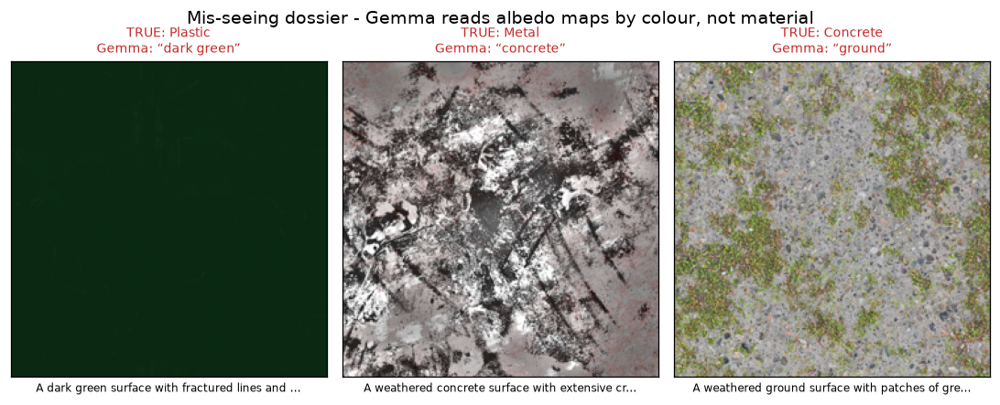
A gold set of 25 queries with known-correct images (from category and tag labels) is scored with
precision@k across the routes. The hybrid fuses CLIP and Gemma-caption scores as
α·CLIP + (1−α)·caption after per-query min-max normalisation, with α exposed as a live slider in
the interface.
| Route | P@1 | P@3 | P@5 | P@10 |
|---|---|---|---|---|
| CLIP-only | 0.640 | 0.573 | 0.536 | 0.428 |
| Caption-only (real Gemma) | 0.320 | 0.373 | 0.368 | 0.360 |
| Gemma “stub-format” | 0.440 | 0.373 | 0.424 | 0.384 |
| Hybrid α = 0.5 | 0.560 | 0.560 | 0.496 | 0.468 |
| Metadata stub * | 0.960 | 0.933 | 0.888 | 0.840 |
* The metadata stub is built from the labels being scored — its score is evaluation leakage, not skill. It is shown only to make that leakage visible.
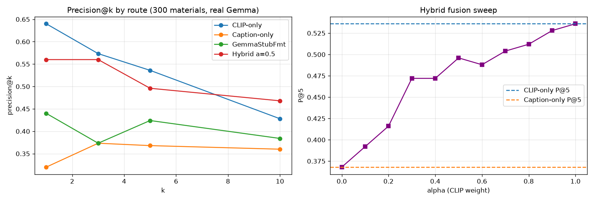
The most useful thing this project taught me is to distrust the flattering version of a result. My first run used a metadata-derived “stub” caption and the caption route looked excellent (P@5 ≈ 0.89) — because it was quietly retrieving on the very labels I was scoring against. Only the real Gemma pass revealed the truth: reading a flat albedo map, a small VLM mostly sees colour, and the honest caption route underperforms the CLIP baseline. The interesting deliverable stopped being “a working chatbot” and became “a measured account of why the obvious idea doesn’t work here, and what would fix it.”
It also grounded a literature point I’d otherwise have missed: the systems that do caption PBR materials successfully (MatPedia, Make-it-Real) caption rendered materials, not raw albedo. My failure is their design choice stated in reverse.
Render, then caption. Bake each material onto a lit sphere and caption that — the single change the literature predicts would cut the 43 % mis-seeing rate and could finally make the caption route competitive. Second: a DINOv2 texture-feature baseline to quantify the true ceiling on material separability, and a small material-CLIP fine-tune on (rendered material, schema-caption) pairs, the recipe proven by The Visual Language of Fabrics. The first of these — render, then caption — I actually built; it is Experiment 2 below.
Experiment 1 ended on an honest negative result: on delit albedo maps a small VLM reads
colour, not material (~43 % mis-seeing), so the caption route loses to CLIP and fusion buys nothing.
The Limitations section named the fix the literature endorses (MatPedia, Make-it-Real): render the material
first, then caption the render. Experiment 2 builds exactly that — changing one variable only (the
input image) and re-running the identical pipeline (same CLIP model, same Gemma schema, same gold set, same
precision@k). Every artifact is duplicated with a _rendered suffix so Experiment 1 stays intact
for a clean side-by-side.
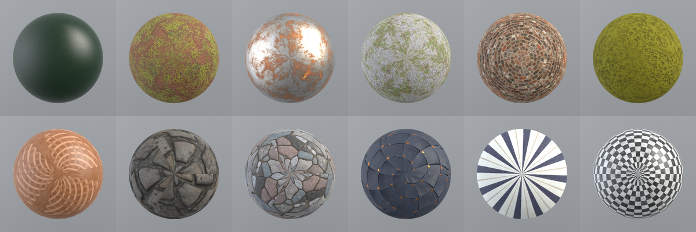
cuda_ad_rgb path needs a local NVIDIA GPU, so this is the only
part of the project that does not run on the free Colab tier — it was produced on my laptop's RTX A1000
(6 GB). The renders are cached to data/corpus_rendered/, so everything downstream stays
Colab-reproducible with no GPU.
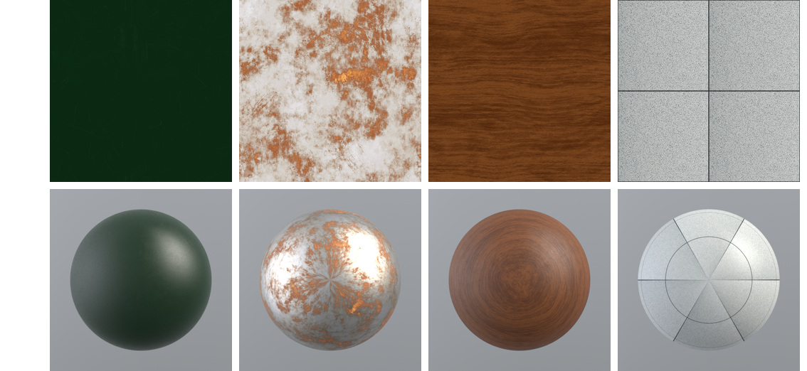
principled BSDF, roughness/metallic maps set reflectance,
the normal map adds mesostructure.Both sides are recomputed on the same 89-material corpus with the same 24-query gold set, so the albedo baseline here (P@5 0.425) is that subset — not the 300-material headline from Experiment 1.
| CLIP-only route | P@1 | P@3 | P@5 | P@10 |
|---|---|---|---|---|
| Albedo (Exp 1 input) | 0.500 | 0.486 | 0.425 | 0.313 |
| Mitsuba render (Exp 2 input) | 0.583 | 0.486 | 0.358 | 0.300 |
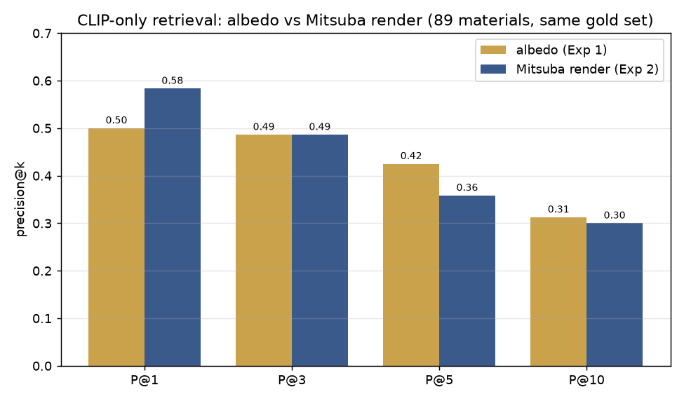
A rank-dependent trade, not a clean win. Rendering improves the single best hit (P@1 0.500 → 0.583) but hurts deeper in the ranking (P@5 0.425 → 0.358). Mechanistically: the lit sphere gives CLIP a cleaner, higher-confidence top match, but the fixed grey background and spherical-UV distortion inject a shared, material-agnostic signal that pulls unrelated spheres together further down the list. For a joint-embedding model matching pixels to text, presentation is a double-edged cue.
The literature's claim is about the VLM: a lit render gives it the finish and specular cues a flat map cannot. The test is to re-run the Gemma 3 4B pass over the renders and re-measure the 43 % material-error rate and the caption-route P@5 — GPU-VLM work that runs on Colab exactly as in Experiment 1.
laion2b_s34b_b79k.all-MiniLM-L6-v2.